VRS Observation Generation Algorithm
observation generation algorithm
Contents
- 1 Introduction
- 2 Observation model assumptions
- 3 Linearization about the master reference station
- 4 Tropospheric delays
- 5 Virtual pseudorange observations
- 6 Equivalence with the rover–master double differences
- 7 Network solution in the ENU frame
- 8 Virtual carrier-phase observations
- 9 Second-order extension
1 Introduction
This document briefly derives the basic algorithm by which the observations of a Virtual Reference Station (VRS) are generated.
Assume that at epoch t the rover u and the reference stations A, B and C almost simultaneously observe the L1 C/A signals broadcast by n satellites, and let λ denote the L1 C/A wavelength. The pseudorange observations are
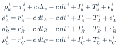
(1)where

2 Observation model assumptions
Taking satellite j as the reference satellite and A as the master reference station, assume that the double-difference ionospheric delays are described by spatial functions FI evaluated at the station positions:
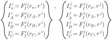
(3)and, in the same way, the tropospheric delays by functions FT:
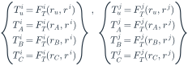
(4)The double-difference pseudorange observation equations of the rover and of the reference stations are then
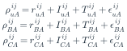
(5)3 Linearization about the master reference station
Given the known IBAij and ICAij, the rover double-difference ionosphere IuAij is estimated as
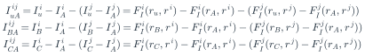
(6)Expanding FIi(rB, ri) and FIi(rC, ri) as Taylor series about rA and neglecting the higher-order terms gives
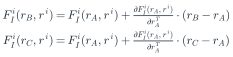
(7)and, likewise, for FIj(rB, rj) and FIj(rC, rj):
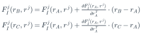
(8)Substituting (6) and (7) into (5) yields
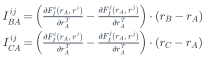
(9)that is,
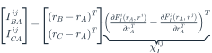
(10)where the column χIij is the double-difference ionospheric gradient. Expanding FIi(ru, ri) and FIj(ru, rj) about rA in the same way,
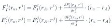
(11)gives
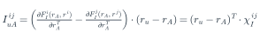
(12)that is, the rover double-difference ionosphere equals the projection of the gradient χIij onto the rover–master baseline vector.
4 Tropospheric delays
The same treatment applied to the tropospheric delay gives
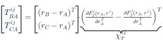
(13)and
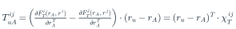
(14)5 Virtual pseudorange observations
Suppose that a virtual reference station V is placed near the rover, still using A as the master reference station. The double-difference delays at V follow directly from the gradients:
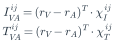
(15)and the VRS double-difference pseudorange observation equation is
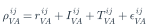
(16)Forming the V–A and u–A double differences of the pseudoranges gives
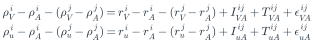
(17)Expanding rui and ruj with rV and re-grouping the delay terms,
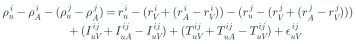
(18)which can be written as
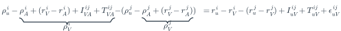
(19)From the above, the virtual pseudorange observations are
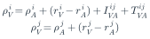
(20)Taking satellite 1 as the reference satellite of the VRS, its virtual observations are
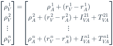
(21)If the rover uses satellite 2 as its own reference satellite, the double-difference pseudorange equation formed between the rover and the VRS is
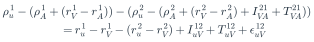
(22)6 Equivalence with the rover–master double differences
Expanding (21) with the definitions (19) and (20),
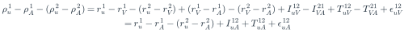
(23)For any other satellite, e.g. satellite 3,
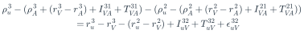
(24)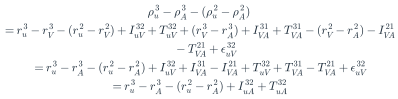
(25)and the delay terms reduce as
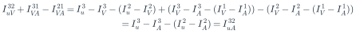
(26)By induction, the full set of rover–VRS double differences
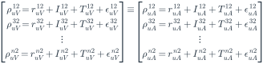
(27)is equivalent to the set of rover–master double differences referred to satellite 2. Feeding the virtual observations (20) to a single-baseline RTK filter is therefore equivalent to processing the network solution directly at the rover.
Suppose now that n reference stations B1, B2, …, Bn operate around the master reference station A, each of them forming a baseline with A:

7 Network solution in the ENU frame
For the double-difference ionospheres of these baselines,
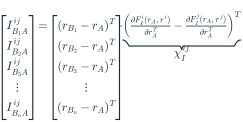
(28)To express χIij in the local ENU frame, let S be the rotation matrix from the ECEF frame to the topocentric coordinate system of the master station A. Inserting ST·S = I,
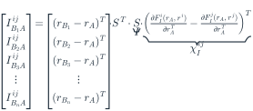
(29)Defining LIij, the geometry matrix H and the ENU gradient χI,ENUij as
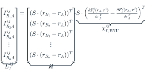
(30)the observation model becomes
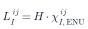
(31)χI,ENUij contains the double-difference ionospheric gradients in the east, north and up directions. The least-squares estimate of (30) is
The double-difference ionosphere of the virtual station V is finally computed as
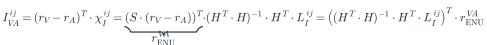
(33)and, in the same way, for the double-difference troposphere:
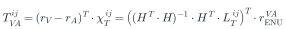
(34)8 Virtual carrier-phase observations
The derivation for the carrier-phase observations proceeds along the same lines. The carrier-phase observation equation is
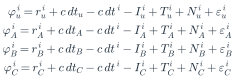
(35)Taking satellite j as the reference satellite and A as the master reference station, the double-difference carrier-phase observation equations are
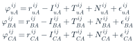
(36)As with the virtual pseudoranges, the virtual carrier-phase observations are
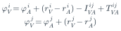
(37)and, with satellite 1 as the VRS reference satellite,
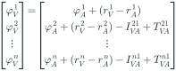
(38)9 Second-order extension
If required, FIi(ru, ri) and FIj(ru, rj) can be expanded as Taylor series to second order:
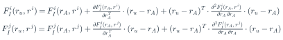
(39)The rover double-difference ionosphere then becomes
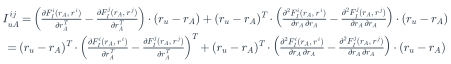
(40)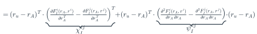
(41)Neglecting the correlation of the gradient between the horizontal directions,
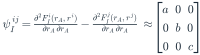
(42)so that
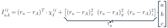
(43)The master reference station A again forms the baselines AB1, AB2, …, ABn with the surrounding stations. For their double-difference ionospheres,
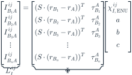
(44)i.e.
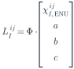
(45)The least-squares estimate of (44) is
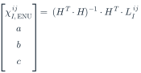
(46)The double-difference ionosphere of the virtual station V is then
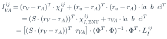
(47)The troposphere is handled in exactly the same way.